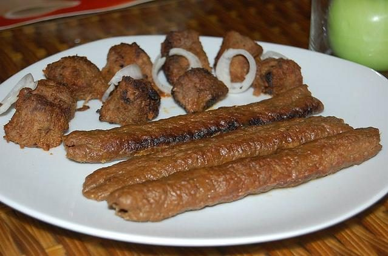

Allergens: none of the ten listed below
Checked against the ingredient list for ten allergens: milk, egg, fish, crustaceans, tree nuts, peanuts, sesame, mustard, soy and gluten. Brands vary, so read the label on anything new to you.
Ingredients
Quantities for 4.
- 600g, minced twice, with some fat Muttonlean mince gives a dry, crumbling kebab
- 1, grated and squeezed bone dry Onion
- 1 tbsp paste Ginger
- 1 tbsp paste Garlic
- 3, very finely chopped Green Chilli
- a large handful, chopped Coriander Leaves
- a handful, chopped Mintoptional
- 2 tbsp, roasted Besan
- 1.5 tsp Garam Masala
- 1 tsp Coriander Powder
- 1 tsp Cumin Powder
- 1 tsp, to finish Chaat Masalaoptional
- 3 tbsp, for basting Neutral Oil
- to taste Salt
Cookware
oven, tawa
Before you start
- Water is the enemy. Squeeze the grated onion until it is genuinely dry, or the mince slides off the skewer.
- Chill the mix hard before shaping. Cold mince grips; warm mince sags.
Method
- Squeeze every drop from the grated onion, using a cloth if necessary.Genuinely dry. This is the step that decides whether the kebabs survive the grill.
- Knead the mince with the onion, ginger, garlic, chilli, herbs, roasted besan, ground spices and salt for 5 minutes until it turns sticky.Kneading develops the protein that binds it. Gentle mixing is not enough.
- Chill at least 1 hour.
- Take a handful, press it around a flat skewer, and work it along into a sausage about 2cm thick, pinching ridges as you go.
- Grill at high heat, 230C, turning every few minutes and basting with oil, for 12 minutes.
- Char the outside under the grill for 2 minutes, rest briefly, then dust with chaat masala and serve with onion and lemon.
Safe temperatures: Minced meat is done at 71°C / 160°F all the way through. Reheat leftovers to 74°C / 165°F. FoodSafety.gov
Storage
Best straight off the skewer. The raw mix keeps 24 hours refrigerated and freezes a month; cooked kebabs dry out on reheating.
Nutrition Medium estimate
High protein: 34 g a serving, 43% of the calories
| Per serving209 g | Per 100 g | |
|---|---|---|
| Calories | 314 kcal | 150 kcal |
| Protein | 33.7 g | 16 g |
| Carbohydrate | 10.7 g | 5 g |
| of which sugars | 2.3 g | 1 g |
| Fibre | 2.5 g | 1 g |
| Fat | 14.8 g | 7 g |
| of which saturated | 2.2 g | 1 g |
| of which unsaturated | 11.3 g | 5 g |
Ingredients given to taste count as zero, so the real figures run a little higher. Nearest database match used for chaat masala, garam masala, mutton. Estimated from raw ingredients using USDA FoodData Central.
Times, yields, allergens and nutrition are guidance. Use your own judgement on doneness and on storing. More in About.